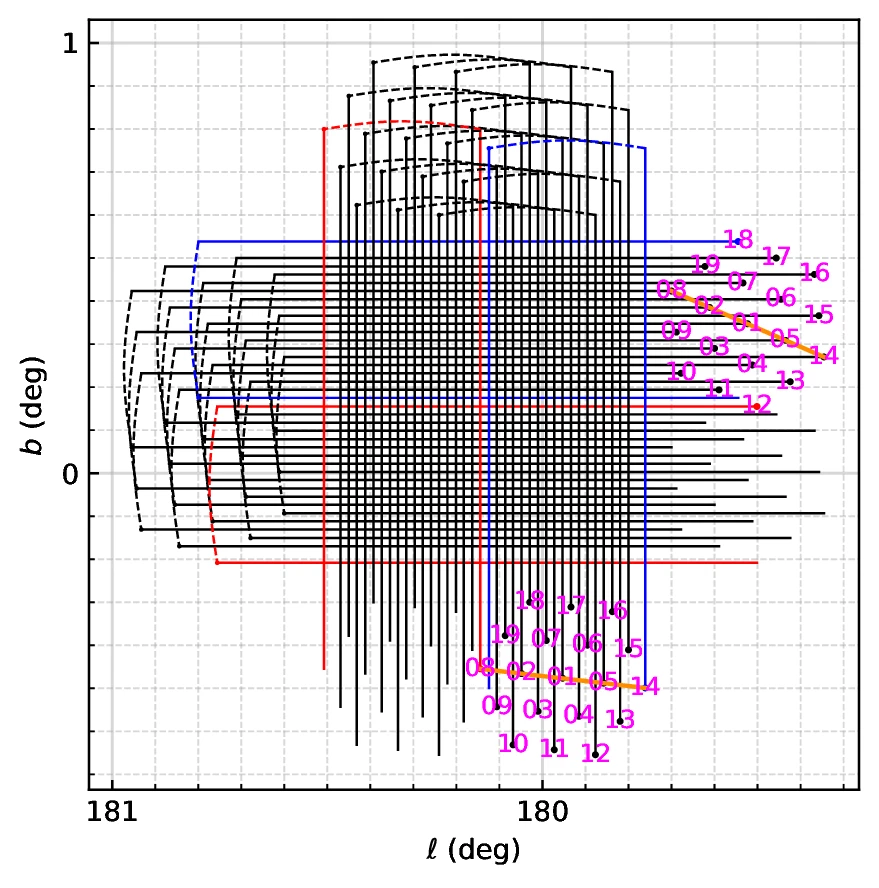
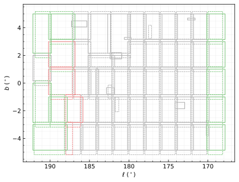
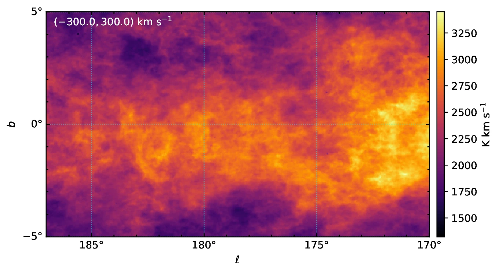

H I spectral-line data
High-resolution Galactic H I data cubes, with survey coverage, FITS metadata, and release documentation.
Public release →FAST H I Mapping of the Milky Way Plane
Survey of Galactic atomic hydrogen with the Five-hundred-meter Aperture Spherical Radio Telescope (FAST).

01 / SURVEY SPECIFICATIONS
02 / DATA PRODUCTS
High-resolution Galactic H I data cubes, with survey coverage, FITS metadata, and release documentation.
Public release →Radio continuum, radio recombination-line, full-Stokes, and piggyback pulsar-backend products will extend the scientific reach of the survey.
Products →Public release: Please check back for release information.
03 / OBSERVATION STATUS

04 / DATA SHOWCASE

05 / PUBLICATIONS
Survey description, observing strategy, data characteristics, validation, and first scientific demonstrations.
Description of the data pipeline, including the cross-calibration algorithm, RFI identification, etc.
Science results based on FHIMAP data will be listed here.
06 / TEAM
Nanjing, China
Urumqi, China
Shanghai, China
Beijing, China
Nanjing, China